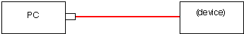

|
|
www.conserver.com |
|
|
www.conserver.com |
This document will outline console server connections to the microAnnex products, through its many variations.
This product has had a number of incantations. Originally named the Xylogics microAnnex (AN2-16), this device featured 16 RJ-45 connections, on a device that would sit on a rack-mounted shelf. These units did send a Serial BREAK to attached units when power to the device was removed. (Serial BREAK, sent at inappropriate times, can be a serious problem for most Sun hosts and servers. For more information, please refer to our Serial BREAK testing page.)
Later, (late in 1995) Bay Networks bought the Annex product line, and renamed the microAnnex as the Bay RA2000. (RA for Remote Annex...) After the acquisition, Bay modified the hardware, so the Bay units did not send Serial BREAK at inappropriate times.
During the fall season of 1998, Nortel Networks bought Bay Networks, and absorbed the RA product line, but decided that the 2000 (and 3000, and 4000) products competed with existing Nortel hardware, so they discontinued the Annex products, in favor of something called the ACN 200. (In my opinion, this was a bad decision, and the ACN 200 doesn't play well in the console server arena...but I can imagine that the terminal server products were a pretty small part of the $9.1M US deal for Bay, which seemed to be aimed at the voice/data integration opportunities.)
Jason Heiss has posted an Annex Servers clues page which offered me some vaulable tips. To save myself some typing, I highly reccomend that folks give his page a good read!http://www.ofb.net/remail?jheiss
All of the connections discussed in this document make use of standard ethernet cables (CAT-5, RJ-45, 8-conductor, 'straight through' cables) unless specified otherwise.
Table of Contents
Annex RJ-45 signaling
RJ-45 Cable Diagrams
Cisco devices with RJ-45(f) ports
Connecting to non-Annex RJ-45
Speciality Cables for non-Cisco RJ-45 ports
Making a null modem cable
Attaching devices to a PC instead
RJ-45 adapter schematics
Devices with DB-9(m) console ports
Devices with DB-25(f) console ports
Breaking into an Annex
Useful Links
Author Credits
|
The table below shows the signal information for both the Cisco RJ-45 Patch Panel solutions (which are considered to be wired as DCE), as well as the Cisco RJ-45 Console and Aux ports (considered to be wired as DTE).
Notes: The reference ground, and data signals, are located on the center pairs of the RJ-45, so you can use a straight-through RJ-11 cable for simple, data-only connections. (However, you should not use RJ-11 or RJ-12 connectors in your RJ-45 jacks for longer than quick tests, as these smaller connectors will tend to bend the outer RJ-45 pins up, and this can lead to intermittent or open connections on the RJ-45 jack later on.) The Annex signals are not symmetrical, so you cannot use USOC-rolled cables to create a null-modem connection. Crossover Ethernet cables will not help you either. |
|
The best way to make a connection between Annex console server ports and adapters is to use an 8-wire 'straight through' Ethernet cable. (Using a Crossover Ethernet cable or CDDI cables (also referred to as 'USOC-rolled' cables) will not work for connecting adapters to the Annex ports.)
Standard Ethernet cables follow a specific wiring pattern. However, not ALL ethernet cables have 8 wires in the cable, since a standard Ethernet interface only uses 4 of the wires. For console connections, you need to make sure that your cables have all 8 wires, wired 'straight through' (as shown to the left) for your connections. |
|
The Cisco-wired patch panel from APA Cables and Netowrks are wired the null-modem opposite from the Cisco console ports, so that Cisco RJ-45 console ports can attach directly to a Cisco patch panel, using an Ethernet (8-wire, straight-through) cable.
Rather than list all of the possibilities here, I have created an Annex Host-to-Adapters Page, which lists the various combinations of male and female, DTE/DCE, DB-9 and DB-25, with a list of the various devices which fall under each connector type. The list also tells you which adapter (or cable) you will need to connect each device to an Annex console server port. There are a few Cisco devices that have RJ-45 consoles that are wired the null-modem opposite from the Cisco wiring standard. The three devices listed below were (I believe) Catalyst products. They are also listed on the Annex Host-to-Adapters Page, with information about which cable to use. (The RJ-45 console on these devices appears to be a patch panel, and not a console port.)
|
|
When you have a device with a non-Annex RJ-45 console port, you will either need to buy or make a special cable, or use a combination of an Annex adapter (connected to the Annex console server), and another non-Annex adapter (connected to the non-Annex device) to create the interface between the two wiring schemes. The common choice for these connections are DB-25 RS-232 adapters, so you can check your work by putting a passive RS-232 signal tracer, or a breakout box, in between the adapters. The table below documents such connections, using ethernet cable (8-wire, straight-through) cables between the patch panel, the devices and the adapters. You can find more tips on my Minor Scroll of Console Knowledge page. |
|
The four charts below show you how to use adapters to make a Null Modem, using standard ethernet cables to provide the appropriate lengths. (Always match vendor-compatible parts! Connect Annex format with Annex format adapters, Cisco with Cisco, etc. Your connection will not work if you mix different vendors models.)
You can also use the 'straight-through' cables shown in the tables above to allow you to insert an RS-232 passive signal tracer or a breakout-box in-line between the RJ-45 devices, so that you can monitor the signal states on the various leads, as a troubleshooting aid. |
|
My introduction to the Xylogics MicroAnnex and Remote Annex products came in the late 1990's, working at Synopsys, in the NCS group. I was introduced to the lore surrounding Serial BREAK and Sun computers, and I managed to halt 16 Sun boxen when I accidentally, and only briefly, cycled the power to one MicroAnnex. After seeing the mess and drama that accident caused, I started researching what caused the trouble, and I began my "Console Server BREAK-off testing", to try to determine which products were safe to use with Sun computer consoles, and to encourage Console Server vendors to make their newer producs BREAK-safe. NOTE: An incorrectly wired RJ45-to-DBx adapter can also cause a Sun server to think it has seen a BREAK! Make sure you are connecting a properly-wired adapter to all live Sun servers! I am a strong proponent of buying pre-wired, pre-labeled adapters and cables. Generally speaking, you probably can't build an adapter cheaper, if you consider the value of your time as well as the component costs. And, whether or not I can make 100 adapters without a mistake isn't being questioned, I'm sure I'd rather not make 100 by myself. The best advantages for buying pre-built adapters and pre-wired cables include;
You can purchase any of the adapters and cables listed on these pages individually (or in bulk) from APA Cables & Networks (www.apacn.com). You also have the option of buying a Annex Console Kit, which includes a complete set of adapters, and some of the specialty cables listed above, as well as a passive RS-232 Signal Tracer. The default shell color is black for Cisco adapters. You can get the shells in another color if you want, provided you want one of the colors listed below: Available colors: BK = black, GN = green, RD = red, YL = yellow, BL = blue, GY = grey So, the APACN part number CFDTE91-GN would denote the DB-9 female DTE adapter, wired for the Cisco RJ-45 format, but supplied with a green plastic shell (instead of the default black shell). APA Cables & Networks also sells adapters and adapter kits for other RJ-45 schema, including the Cisco/Lantronix, IOLAN Rack+ and Xyplex/iTouch/MRV console server families. APA Cables & Networks uses different default colors to make it easier to visually identify the different RJ-45 wiring schema. The DB-25 adapters are wired according to the older Cisco equivalents (from the CS-500 days). The DB-9 parts are derivative works. The signaling for the Cisco RJ-45 consoles is shown at the beginning of this guide. With all of this said, I also understand that sometimes you just need to make that one cable or adapter, and buying just one isn't practical. So, here are the schematics. (The APA Cables & Networks part number is shown below each adapter. If there is a Cisco equivalent, I've noted the Cisco part number as well.)
|
|
As with adapters, I recommend buying pre-built, pre-labeled, tested cables. APA Cables and Networks sells specialty cables for connecting Annex console server ports to other console servers and devices, and these can be ordered from the descriptions and part numbers shown below. The default length is 7 feet, but you can order custom lengths as needed. The cables come with black boots on the RJ-45 end, and labels denoting the Annex end. The MMJ end does not get a boot, since they can't find anyone who makes a colored MMJ boot.
There are other cables listed on the Annex Adapter Kit Page.
|
|
U.S. Robotics (USR, now 3-Com) digital modem chassis have a different pinouts than Cisco on the console ports on their NICs and NACs. You can accommodate these devices by combining a Cisco 29-0810-01 (CFDTE) adapter with a USR cable (part number 1.009.691-B) attached to the USR console port, and an ethernet cable to connect the AFDTE adapter to the Cisco port. You can also make a single cable, with RJ-45 male connectors on each end. Make sure that you label both ends of the cable, since the wiring is not symmetrical (it makes a difference which end plugs into the Cisco port!) APA Cables and Networks sells a cable for this (black boot on the Annex end, orange boot on the USR end);
There are more cables listed on the Annex Host-to-Adapters Page. |
|
Digital Equipment Corp. (DEC, then Compaq, then H.P.) equipment often used an RJ-13 with an offset locking tab, referred to as a Modified Modular jack (MMJ). This included their VT-series terminals, VAX equipment, and even newer Alpha series equipment. APA Cables and Networks sells a cable for connecting DEC MMJ-equipped gear to an Annex port (black boot on the Annex end, and no boot on the DEC end);
There are other cables listed on the Annex Host-to-Adapters Page. |
|
APA Cables and Networks sells cables for connecting Kentrox consoles to Annex console servers (black boot on the Annex end, orange boot on the Kentrox end);
There are more cables listed on the Annex Host-to-Adapters Page. |
|
The Annex console server is rare in one way; it has a distinct lead for the DCD signal.
Rather than list all of the possibilities here, I have created an Annex Host-to-Adapters Page, which lists the various combinations of male and female, DTE/DCE, DB-9 and DB-25, with a list of the various devices which fall under each connector type. The list also tells you which adapter (or cable) you will need to connect each device to a Annex console server port. There are currently two other DB-9 to RJ-45 adapters available from APACN;
Note: Some Cisco 1900-series switches use a DB-9 console connection, instead of the RJ-45 connector. Some of these devices do not like a signal on DB-9 pin 1, while other versions of the 1900 will require this signal. (If the Cisco 1900 you have attached to is spewing AT modem commands out the port, you've got the wrong adapter.) The AFDCE91 does have DCD connected to DB-9 pin 1, while the AFDCE93 does not have a signal on DB-9 pin 1. APACN sells any of these adapters (individual or bulk), as well as a complete adapter/cable set. |
 Rather than list all of the possibilities here, I have created an Annex Host-to-Adapters Page, which lists the various combinations of male and female, DTE/DCE, DB-9 and DB-25, with a list of the various devices which fall under each connector type. The list also tells you which adapter (or cable) you will need to connect each device to an Annex serial port. APA Cables and Networks sells any of these adapters (individual or bulk), as well as a complete adapter/cable set.
|
|

|
|
Tips for configuring the serial ports on terminal servers for remote access to attached serial devices.
If you are connecting your network equipment consoles to your console server, remember to consider;
|
|
To start, you'll need a terminal or serial connection to talk to the Annex box on serial port 1. This means that you will need some type of RJ-45-DBx adapter or a specialty cable as well. Use a passive RS232 signal tracer to ensure your serial connection is good. By default, the Annex port will be comunicating at 9600 bps, 8-N-1. (However, this may have been changed by the previous owner, or your site may use higher speeds. Bottom line: if 9600 8N1 doesn't work for you, try other settings.) Unless the serial port is configured as a Console port, the Annex expects to see the hardware flow control lead! If your cable, adapter, or terminal device don't send that signal to the Annex, you may not see a prompt. (If the flow control lead is connected physically, a PC serial port will normally supply the signal, even when flow control is disabled, so I recommend using No Flow Control on your terminal configuration.) In the default configuration, the Annex usually uses it's IP address for the "su" password. There are two ways to get to the Annex via a serial port for initial configuration, easy and hard... Easy: Connect your terminal to RJ45 serial port 1, 9600 8N1, and turn the power off. Then, perform the next three steps about one second apart;
Wait a few more seconds, then press the [enter] (or [return]) key on your keyboard. The Annex should respond with the "monitor::" prompt on your terminal. Type "help": to get a list of available comands. Typing "config" should show you the current IP address. Hard: Jason Heiss did it the hard way, and he documented it on his Annex page. |
|
Here are some other web pages and files that I've found, which may be helpful to you if you're hacking with an old Annex device. The first is Jason Heiss' great Annex Servers page. (Many of the links below came from his page, but there are other valuable bits on his page that I didn't copy.) Nortel Networks repository of Annex knowledge FTP the Bay Networks tarball of the R.10 code for Micro Annex XL FTP the Bay Networks tarball of the R.7 code for Micro Annex ELS Go to www.nortelnetworks.com, roll your mouse over the Support ∓ Training menu bar, and support, to get to the Browse product support tool. In the first section, select Other, and you'll find the MicroAnnex and Remote Annex families listed in the second section...select the product that you want, and then choose your topic from section three...then click Go! Browse the Bay Networks
Remote
Annex s/w directories. If you have a SunSolve account, you can try this tech note (http://sunsolve.sun.com/handbook_pub/Devices/Communication/COMM_Term_Concentr.html) about loading the Annex OS into flash. Of course, your Annex needs to have flash built-in for this to work...you'll "boot -l", get the code, and (in the Monitor mode) type "seq", and select "self" instead of "net" to boot from the flash from now on. |
|
I am a strong proponent of buying pre-wired, pre-labeled adapters and cables. Generally speaking, you probably can't build an adapter cheaper, if you consider the value of your time as well as the component costs. And, whether or not I can make 100 adapters without a mistake isn't being questioned, I'm sure I'd rather not make 100 by myself. The best advantages for buying pre-built adapters and pre-wired cables include;
You can purchase any of the adapters and cables listed on these pages individually (or in bulk) from APA Cables and Networks (www.apacn.com). You also have the option of buying an Annex Console Kit, which includes a complete set of adapters, and some of the specialty cables listed above, as well as a DB-9 and a DB-25 passive RS-232 Signal Tracer. The default color is grey for Annex adapters. You can get the shells in another color if you want, provided you want one of the colors listed below. Available colors: BK = black, GN = green, RD = red, YL = yellow, BL = blue, GY = grey So, the part number AFDTE91-GN would denote the DB-9 female DTE adapter, wired for the Annex RJ-45 format, with a green plastic shell. APACN also sells adapters and adapter kits for other RJ-45 formats, including the Cisco/Lantronix, IOLAN Rack+ and Xyplex/iTouch/MRV console server families. APACN uses different default colors to make it easier to visually identify the different RJ-45 wiring formats. The adapters are wired according to be compatible with some existing MOD-TAP adapters, and some of the adapters are derivative works. |
|
|
|
NOTICE: Most of the pages, articles, and tutorials on this website are copyrighted works. You may make 'deep links' to various pages. (If you let me know which page(s) you are linking to, I'll let you know if I move the page(s) during updates.) Please send me email if you wish to republish any material, or use it on your own website. |